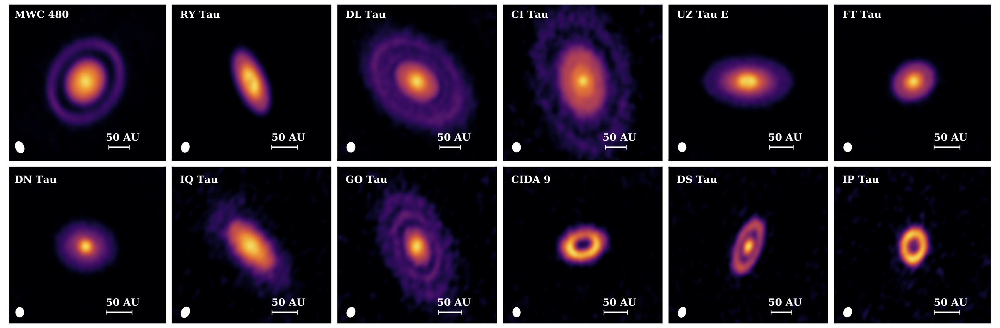
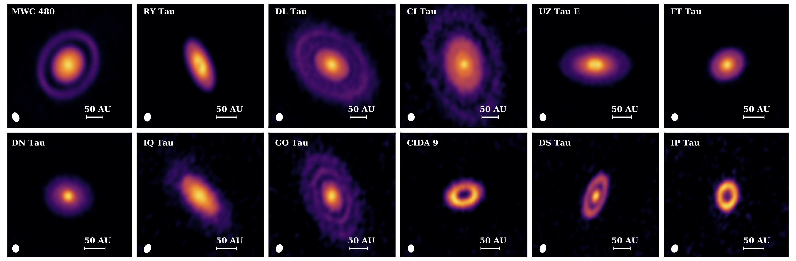
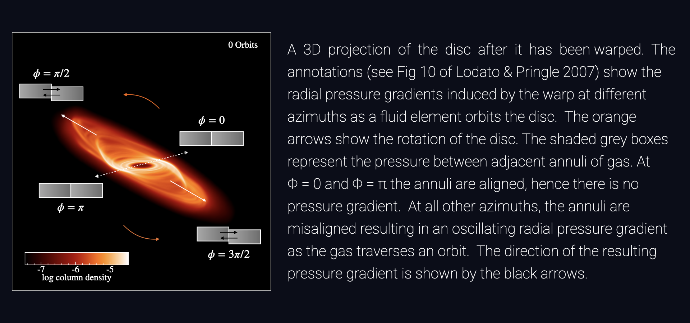

Suppressing Gravitational Instabilities In Self-Gravitating Protoplanetary Discs
Sahl Rowther, Farzana Meru, Rebecca Nealon, Grant M. Kennedy, Christophe Pinte
Where are the Gravitationally Unstable Discs?
When discs are young, they are expected to be quite massive. A characteristic feature of massive disc are large scale spiral features due to gravitational instabilities. However, observations of recent protoplanetary discs  (Andrews et al. 2018, Long et al. 2018) in the last few years have shown that most discs tend to be axisymmetric, with some also showing ring and gap structure. Even observations of very young Class 1 discs such as GY 91
(Andrews et al. 2018, Long et al. 2018) in the last few years have shown that most discs tend to be axisymmetric, with some also showing ring and gap structure. Even observations of very young Class 1 discs such as GY 91  (Sheehan & Eisner 2018) and IRS 63
(Sheehan & Eisner 2018) and IRS 63  (Segura-Cox et al. 2020), both thought to be less than half a million years old, show rings & gaps.
(Segura-Cox et al. 2020), both thought to be less than half a million years old, show rings & gaps.
Does the lack of observed large scale spiral structures imply that young discs are not as massive as expected? Or can signatures of gravitational instabilities be hidden? It is reasonable to assume that gravitationally unstable discs do not evolve in isolation. The physical processes that are often used to explain observed substructures such as rings and gaps, along with the mechanisms that can warp a disc will also influence the evolution of young self-gravitating discs. Our aim is to investigate whether physical processes such as warps and planet-disc interactions can hide signatures of gravitational instability.
A Warped Disc
- As the disc evolves, the warp propagates radially both inwards and outwards.
- Since the warp was introduced numerically, it is not sustained. Thus as the disc continues to evolve, the warp smooths out and disc becomes coplanar.
- The influence of warp quickly suppresses the spiral structures yielding an axisymmetric gravitationally stable disc.
Planet-Disc Interactions
- The presence of the planet significantly impacts the structure of the disc.
- The planet suppresses large scale spiral structures due to gravitational instabilities and carves open a gap.
- The spiral arms generated by the planet heats up the disc pushing it into the gravitationally stable regime resulting in a largely axisymmetric disc.
Why does the disc heat up?
In both scenarios, the PdV work plays an important role in altering the disc's evolution. The divergence of the velocity is directly linked to the PdV work, so we use it as a proxy for the PdV work.
Impact of the warp
- In the warped region of the disc, adjacent annuli of gas are misaligned with varying vertical height \(z\). This results in an (oscillating radial pressure gradient) as the gas traverses an orbit.
- This oscillating radial pressure gradient can trigger a strong response in the radial velocity of the disc (Lodato & Pringle 2007), which heats up the disc. This is especially apparent in the early stages as seen by the large magnitudes of the velocity divergence.
- As the warp dissipates, there is little variance in the pressure gradient. Thus, the magnitude of velocity divergence has greatly decreased as expected leading to less heating from PdV work.
Impact of the planet
- The spiral wakes generated by the planet as it migrates are regions of relative overdensities with respect to the disc background.
- The radially propagating spiral wakes can evolve into shocks.
- The exchange of momentum and energy between the density wakes and the disc at the shocks influence the global properties of the disc, heating it up.